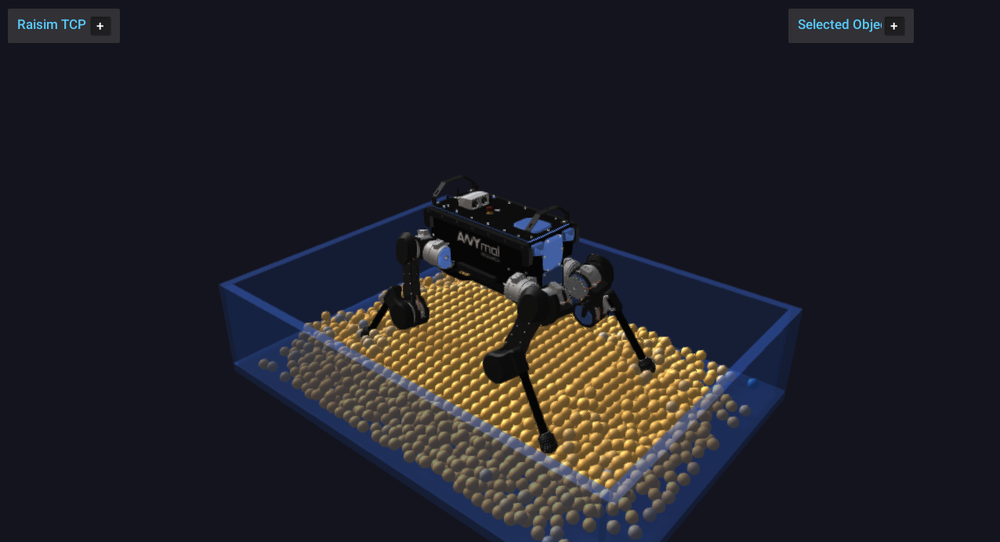

Granular Media


raisim::GranularSystem is RaiSim’s native granular-material object. It is
designed for fast single-threaded simulation of many spherical grains without
creating one Sphere object per particle. All particles are owned by one
RaiSim object, and particle-particle contacts are resolved internally with a
discrete-element-style contact model.
The primary use case is robotics simulation where terrain compliance, sinkage,
surface flow, and foot or wheel interaction matter more than rendering every
grain as a full rigid body. The implementation favors deterministic,
single-threaded stepping and a compact memory layout. It should not change the
performance characteristics of ordinary rigid-body worlds unless a
GranularSystem is actually added to the world. The granular_media
example (Server Example: Granular Media) places an ANYmal on a settled
granular bed and streams the particles to the Rayrai TCP viewer.
Overview
Granular media in RaiSim are represented by spherical particles with individual positions, velocities, angular velocities, radii, material ids, and optional fixed flags. The system supports:
Particle-particle normal contact.
Tangential friction with persistent contact history.
Rolling friction.
Linear and Hertz normal-force laws.
Optional short-range particle-particle cohesion.
An internal horizontal ground plane.
An internal axis-aligned container box.
Height-map contact.
Rigid primitive contact with spheres, boxes, capsules, and cylinders.
Compound-object contact for primitive children.
Triangle-mesh contact by closest-point queries against mesh triangles.
Articulated-system contact for primitive collision bodies.
Particle insertion and removal during simulation.
Fixed particles for rough beds or anchored granular layers.
Periodic boundaries.
Binary save/load of granular state, and world XML export/import.
Visualization through instanced sphere visuals that the application updates.
The granular solver is not a separate global solver. During a world step,
GranularSystem computes its own particle forces, applies equal-and-opposite
forces to dynamic rigid and articulated bodies, and integrates the granular
particles inside the regular RaiSim stepping sequence.
API Surface
The public construction API is exposed through raisim::World:
World::addGranularParticles(positions, radii, material)creates a granular system from explicit world-space particle centers and radii.World::addGranularBox(options, material)creates a deterministic regular packing inside an axis-aligned box.
After construction, GranularSystem owns all particles as one RaiSim object.
Particle-level APIs use local particle indices. Fixed particles report
BodyType::STATIC through getBodyType(localIdx); all other particles
report BodyType::DYNAMIC.
Data Model
Granular state is stored in structure-of-arrays form and can be inspected
without creating individual Sphere objects:
getNumParticles()returns the current particle count.getPositions(),getVelocities(), andgetAngularVelocities()return per-particle state arrays.getRadii()returns per-particle radii.getParticleMaterialIds()returns material ids used for friction mixing.getFixedParticleFlags()returns1for fixed particles and0for dynamic particles.getMaterial()andgetBoundaryMaterial()return the global material and boundary material currently used by the system.
The returned vectors are owned by the granular system. Treat references as short-lived views and reacquire them after particle insertion, removal, or checkpoint loading.
Creating Granular Media
Explicit particles
Use World::addGranularParticles when you already have particle positions
and radii. Positions are world-space particle centers.
raisim::World world;
world.setTimeStep(0.001);
world.setGravity({0.0, 0.0, -9.81});
std::vector<raisim::Vec<3>> positions;
std::vector<double> radii;
positions.push_back({0.0, 0.0, 0.10});
positions.push_back({0.09, 0.0, 0.18});
positions.push_back({0.18, 0.0, 0.10});
radii.assign(positions.size(), 0.04);
raisim::GranularSystem::Material material;
material.density = 1600.0;
material.normalStiffness = 5.0e4;
material.normalDamping = 25.0;
material.tangentialStiffness = 2.5e4;
material.tangentialDamping = 6.0;
material.friction = 0.8;
material.rollingFriction = 0.02;
material.substeps = 2;
auto* grains = world.addGranularParticles(positions, radii, material);
grains->setName("sand");
grains->setGroundPlane(0.0);
The constructor requires at least one particle, matching position/radius vector sizes, positive radii, positive density, a positive substep count, and non-negative material parameters.
Packed boxes
Use World::addGranularBox for a deterministic regular packing inside an
axis-aligned box. The generated particle centers start at minCorner + radius
and advance by spacing along x, y, and z while the whole particle stays
inside maxCorner. BoxOptions::maxParticles caps the count; 0 (the
default) means no cap.
raisim::GranularSystem::BoxOptions bed;
bed.minCorner = {-0.6, -0.4, 0.0};
bed.maxCorner = { 0.6, 0.4, 0.25};
bed.radius = 0.02;
bed.spacing = 0.043;
bed.maxParticles = 5000;
auto* grains = world.addGranularBox(bed, material);
grains->setName("granular_bed");
Set BoxOptions::fixed = true to create a fixed rough bed. Fixed particles
keep zero velocity, ignore external particle forces, and still participate in
contacts as static grains. A common pattern is to create a bottom layer of
fixed particles, then add dynamic grains above it.
Runtime emission
Particles can be added during simulation. emitBox adds a deterministic
regular grid, while emitBoxRandom adds a deterministic jittered grid with
seeded radii in [minRadius, maxRadius].
grains->reserveParticles(20000);
grains->emitBox({-0.2, -0.2, 0.5},
{ 0.2, 0.2, 0.8},
0.018,
0.04,
1000,
{0.0, 0.0, -0.1});
grains->emitBoxRandom({-0.1, -0.1, 0.9},
{ 0.1, 0.1, 1.1},
0.014,
0.020,
0.045,
500,
1234);
The arguments are the box corners, the radius (or radius range), the grid
spacing, the maximum number of particles for this call, the random seed
(emitBoxRandom only), and optional initial linear velocity, angular
velocity, material id, and fixed flag. Unlike BoxOptions::maxParticles,
an emitter’s maxParticles of 0 emits nothing. emitBoxRandom requires
spacing >= 2 * maxRadius. Both return the number of emitted particles.
Call reserveParticles before repeated emission to avoid allocation in the
hot loop. The random emitter is deterministic for the same seed and input
options; it is meant for reproducible scenes, not for non-deterministic
sampling.
For one-off insertion, use addParticle:
const size_t id = grains->addParticle({0.0, 0.0, 0.6},
0.02,
{0.0, 0.0, -0.1},
{0.0, 0.0, 0.0},
0,
false);
grains->setVelocity(id, {0.1, 0.0, 0.0});
addParticle returns the local index assigned at insertion time. If later
removals are possible, do not store local indices as permanent identifiers:
removing a particle moves the last particle into the removed index.
Material Parameters
GranularSystem::Material controls mass, contact forces, friction, and
substepping. Defaults are shown in parentheses:
density(1600 kg/m³): particle material density. Particle mass is computed from sphere volume,4/3*pi*r^3.normalStiffness(1e5): normal contact stiffness, in N/m for the linear model. Larger values reduce overlap but require a smaller time step or more substeps.normalDamping(20 N s/m): normal relative-velocity damping.tangentialStiffness(0 N/m): tangential spring stiffness. Zero selects0.5 * normalStiffness.tangentialDamping(0 N s/m): tangential relative-velocity damping.friction(0.5): Coulomb friction coefficient. It is also the initial value of particle material 0 and of the boundary material.rollingFriction(0): rolling-friction coefficient; the resisting torque isrollingFriction * normalForce * radius. Likefriction, it initializes particle material 0 and the boundary material.cohesionStiffness(0) andcohesionMaxDistance(0 m): particle-particle cohesion. While the surface gapgis at mostcohesionMaxDistance, the attractive force iscohesionStiffness * (cohesionMaxDistance - max(0, g)). Either value at zero disables cohesion.normalContactModel(LINEAR): eitherLINEARorHERTZ.substeps(1): number of granular substeps per RaiSim world step; must be positive.maxSpeed(0 m/s): optional particle linear speed clamp.0disables it.maxAngularSpeed(0 rad/s): optional angular speed clamp.0disables it.
The default normal model is linear:
where \(\delta\) is the overlap (penetration depth) and \(v_n\) is the relative normal velocity, positive when the surfaces separate. The repulsive force is clamped so that it never pulls; cohesion is a separate term. The Hertz model replaces the elastic term with \(k_n \sqrt{R_\mathrm{eff}}\,\delta^{3/2}\), where \(R_\mathrm{eff}\) is the effective radius of the contact. It is opt-in:
material.normalContactModel =
raisim::GranularSystem::NormalContactModel::HERTZ;
For small overlaps, Hertz contact is softer than the linear law with the same
normalStiffness. This can be useful when a scene needs smoother initial
contact formation, but the time step and stiffness should still be tuned
together.
Particle Materials And Boundary Materials
The global material provides default friction and rolling friction. For mixed granular beds, assign per-particle material ids:
grains->setParticleMaterial(0, {0.3, 0.00}); // low-friction grains
grains->setParticleMaterial(1, {0.9, 0.03}); // rough grains
grains->setParticleMaterialId(17, 1);
Particle-particle friction uses the geometric mean of the two materials’
friction coefficients; when both particles have the same material id, that
material’s friction is used directly. Rolling friction is not mixed between
particles: each particle uses its own material’s rolling coefficient. Material
ids that were never defined with setParticleMaterial use the global
friction and rollingFriction values.
The boundary material is mixed with each particle material (geometric mean of both coefficients) for ground, container, height-map, rigid-body, compound, mesh, and articulated contacts:
grains->setBoundaryMaterial({0.7, 0.02});
Use a low boundary friction to emulate a smooth wall, and a high boundary friction to emulate rough terrain or rough container walls.
Contact And Rigid-Body Interaction
Granular-rigid interaction is two-way for dynamic bodies. When a grain overlaps a dynamic rigid body, RaiSim applies force and torque to the grain and applies the opposite force to the rigid body at the contact point. Static bodies push grains but do not receive velocity changes.
Supported rigid contact targets are:
SphereBoxCapsuleCylinderCompoundobjects made from primitive childrenMeshobjects with triangle collision meshesArticulatedSystemprimitive collision bodiesHeightMap
This allows robot feet, wheels, tools, buckets, and terrain meshes to interact
with granular beds without replacing those bodies with granular-specific
objects. Other object types are ignored by the grains, including a world
Ground created by World::addGround(), mesh collision bodies of
articulated systems, deformable objects, and other granular systems. Granular
contacts are computed by the granular system itself and do not consult
collision groups or masks.
For an articulated robot standing in granular media, create the bed first, settle it, then place the robot so that its feet slightly touch the settled surface:
auto* grains = world.addGranularBox(bed, material);
grains->setGroundPlane(0.0);
for (int i = 0; i < 500; ++i) {
world.integrate();
}
auto* anymal = world.addArticulatedSystem(
std::string(rscPath) + "/anymal/urdf/anymal.urdf");
// Set generalized coordinates so the feet start close to the granular
// surface, then use the usual PD targets for standing.
The granular system uses broad-phase pruning for rigid contacts. AABB pruning keeps the number of particle-shape candidate pairs low when only a small part of the granular bed is near a rigid or articulated body.
Boundaries
Ground plane
setGroundPlane adds a horizontal plane used only by this
GranularSystem:
grains->setGroundPlane(0.0);
grains->disableGroundPlane();
This does not add a world Ground object, and grains ignore a world
Ground created with World::addGround(). When robots and grains must share
a floor, either combine a world ground for the robots with setGroundPlane at
the same height for the grains, or use a static Box as the floor, which
collides with both.
Container box
setContainerBox confines grains to an axis-aligned box with an open top
(four side walls and a floor). minCorner must be strictly below
maxCorner on every axis:
grains->setContainerBox({-0.5, -0.5, 0.0},
{ 0.5, 0.5, 0.4});
The container is internal to the granular system. It affects grains, but it is
not a visible or physical obstacle for other RaiSim objects. If a robot must
collide with the same container, add physical static boxes to the world as
walls and floor. disableContainerBox() removes the container.
Periodic boundary
Periodic boundaries wrap particle centers after integration. The last three
arguments enable wrapping along x, y, and z; minCorner must be below
maxCorner on every axis, including disabled ones:
grains->setPeriodicBoundary({0.0, 0.0, 0.0},
{1.0, 1.0, 1.0},
true, true, false);
This is useful for homogeneous material tests and steady-flow studies. Avoid periodic boundaries when the scene contains local objects such as robot feet unless that wraparound behavior is physically intended.
Particle Lifecycle
Particles can be removed by index, by z threshold, or by an axis-aligned drain box:
grains->removeParticle(10);
grains->removeParticlesBelowZ(-0.2);
grains->removeParticlesInBox({-0.1, -0.1, 0.0},
{ 0.1, 0.1, 0.2});
Each removal moves the last particle into the removed index, so the indices of other particles can change. The bulk functions return the number of removed particles. Tendons attached to particles are updated by the world (see Tendons).
Removal also clears contact histories associated with the removed particles, so newly added particles do not inherit tangential state from old particle ids. The implementation uses stable internal particle ids for contact history; this keeps add/remove sequences deterministic.
External Forces And Fixed Particles
The standard Object force APIs work on dynamic granular particles:
grains->setExternalForce(0, {0.0, 0.0, 1.0});
grains->setExternalTorque(0, {0.0, 0.0, 0.01});
grains->clearExternalForcesAndTorques();
Fixed particles are intentionally different. They are useful as static rough terrain and do not move under gravity, external force setters, or collision forces:
grains->setParticleFixed(0, true);
Dynamic rigid and articulated bodies can still receive forces from fixed particles. This makes fixed grains useful for rough support layers under a dynamic granular bed.
Use setVelocity and setAngularVelocity for initialization, scripted
emission, or controlled validation scenes:
grains->setVelocity(0, {0.2, 0.0, 0.0});
grains->setAngularVelocity(0, {0.0, 0.0, 5.0});
Velocity setters are ignored for fixed particles.
State, Statistics, And Diagnostics
getLastStepStats returns counters from the previous granular step:
const auto& stats = grains->getLastStepStats();
std::cout << "particle contacts: " << stats.particleContacts << "\n";
std::cout << "rigid contacts: " << stats.rigidContacts << "\n";
std::cout << "max penetration: " << stats.maxPenetration << "\n";
The most useful fields are:
candidatePairs: particle-particle broad-phase candidates.rigidCandidatePairs: particle-rigid or particle-articulated candidates.meshTriangleCandidatePairs: mesh triangle candidates tested.particleContacts: active particle-particle contacts.boundaryContacts: contacts with ground, container, and height maps.rigidContacts: contacts with rigid, compound, mesh, or articulated bodies.cohesiveContacts: contacts where cohesion produced attraction.activeContactHistories: persistent tangential histories kept this step.staleContactHistoriesRemoved: histories removed because the contact disappeared.emittedParticlesandremovedParticles: lifecycle counters foremitBox/emitBoxRandomandremoveParticlesBelowZ/removeParticlesInBox. SingleaddParticleandremoveParticlecalls are not counted.wrappedParticles: periodic-boundary wraps.velocityClamps: linear or angular speed clamps.maxPenetration: largest overlap detected in the step.maxSpeed: largest particle speed after the step.
These counters are intentionally cheap to query and are useful for profiling, automated validation, and scene tuning.
Save And Load
Granular checkpoints store particle state, the global material, the per-id
particle materials, and the boundary material in a binary format.
loadGranularState replaces all particles and materials of the system it is
called on, so the restored system can be created with a single placeholder
particle:
grains->saveGranularState("/tmp/bed.bin");
grains->saveGranularState("/tmp/bed_no_history.bin", false);
auto* restored = world.addGranularParticles(
{{0.0, 0.0, 1.0}}, {0.05}, raisim::GranularSystem::Material());
restored->loadGranularState("/tmp/bed.bin");
The optional includeContactHistories flag controls whether persistent
tangential contact histories are written. Including histories is useful when
continuing a simulation exactly. Skipping histories creates smaller files and
is usually sufficient for initialization snapshots.
Boundary settings such as ground planes, containers, and periodic boundaries are not serialized. Reapply those settings after loading if the restored scene needs them. Loading also resets the step statistics. Tendons attached to the replaced particles are not remapped; remove them before loading.
World XML
World::exportToXml writes each granular system as a <granular> object
with its material, per-id particle materials, boundary settings (ground plane,
container, periodic cell, and boundary material), and the position, radius,
velocities, material id, and fixed flag of every particle. Loading the file with
raisim::World(path) recreates the system. Unlike saveGranularState, the
XML includes the boundary settings but not the tangential contact histories.
The element layout is intended for this export/import round trip; the loader
requires the attributes that the exporter writes.
Visualization
Neither RaisimServer nor a local RayraiWindow draws a
GranularSystem automatically. Create an InstancedVisuals object with one
sphere instance per particle and update it from
GranularSystem::getPositions after each step. The granular_media example
does this for the Rayrai TCP viewer:
auto* visual = server.addInstancedVisuals(
"granular_particles",
raisim::Shape::Sphere,
raisim::Vec<3>{radius, radius, radius}, // sphere radius
raisim::Vec<4>{0.92, 0.70, 0.34, 1.0}, // color at weight 0
raisim::Vec<4>{0.16, 0.45, 0.95, 1.0}); // color at weight 1
visual->resize(grains->getNumParticles());
// After each step, while holding the visualization mutex:
server.lockVisualizationServerMutex();
const auto& positions = grains->getPositions();
for (size_t i = 0; i < positions.size(); ++i)
visual->setPosition(i, Eigen::Vector3d(positions[i][0], positions[i][1], positions[i][2]));
server.unlockVisualizationServerMutex();
Call resize again when the particle count changes; it resets every
instance to the base size. For particles of different radii, set each
instance’s absolute size with setScale(i, {r, r, r}). setColorWeight
blends between the two colors, for example to show particle speed.
If a container must be visible and physically collide with a robot, create actual static boxes in the world and assign a transparent appearance:
auto* wall = world.addBox(0.04, 1.0, 0.4, 1.0);
wall->setBodyType(raisim::BodyType::STATIC);
wall->setAppearance("0.2, 0.35, 0.7, 0.5");
Using both internal granular containers and physical static wall boxes is valid, but remember their roles: the internal container confines grains; the physical boxes collide with robots and are visible to the viewer.
Numerical Tuning
Granular scenes are sensitive to time step, stiffness, damping, particle size, and packing density. The following guidelines are practical starting points:
Start with a lower
normalStiffnessand increase it until penetration is acceptable.Increase
substepsbefore increasing stiffness aggressively.Keep
spacinggreater than2 * radiusfor generated initial packings unless you deliberately want pre-compressed particles.Add a settling phase before placing robots or tools on the bed.
Use a fixed bottom layer or a physical floor to prevent the whole bed from drifting.
Use
maxSpeedandmaxAngularSpeedonly as stability safeguards; a well-tuned scene should not rely on frequent clamping.Watch
maxPenetration,maxSpeed, and contact counts while tuning.Prefer fewer, larger particles for controller development and more particles only when the local terrain response requires it.
A good robotics workflow is:
Build and settle the bed without the robot.
Record
maxPenetrationandmaxSpeedduring settling.Add the robot slightly above the settled surface.
Run a short robot-settling phase with normal control gains.
Increase particle count only after the contact model and robot behavior are stable.
Parameter Interactions
normalStiffness, normalDamping, substeps, and the world time step
should be tuned together. A stiffer contact law reduces overlap but increases
the natural contact frequency. If the simulation becomes noisy after increasing
normalStiffness, first increase substeps or reduce the world time step
instead of adding damping blindly.
tangentialStiffness controls how strongly tangential contact history resists
sliding. Leaving it at 0 uses an internally derived value from the normal
stiffness. Set it explicitly when you need reproducible comparisons across
normal-stiffness sweeps.
cohesionStiffness and cohesionMaxDistance should be kept small relative
to normal contact stiffness and particle radius. Cohesion acts only over a
short surface gap; it is suitable for qualitative clumping, not for modeling
moisture or cemented grains.
Performance Model
The implementation is single-threaded. It does not use thread_local state,
and it is intended to preserve RaiSim’s deterministic stepping model.
Main cost drivers are:
Number of particles.
Number of particle-particle candidate pairs.
Number of persistent tangential contact histories.
Number and complexity of nearby rigid, compound, mesh, and articulated collision shapes.
Substep count.
Contact model stiffness, because stiffer scenes usually need smaller time steps or more substeps.
RaiSim uses a spatial grid for particle broad phase. Homogeneous-radius scenes use a fast path for contact thresholds and effective radius. Rigid and articulated contacts use contact AABBs to avoid checking every particle against every shape when possible. Mesh contacts first query candidate triangles, then run closest-point checks only on those candidates.
For fast simulation:
Keep particle count as low as the task allows.
Use uniform radii when possible.
Use simple rigid collision shapes for robot feet and tools when possible.
Prefer primitive or compound collision for robot contact surfaces; use mesh collision only where the shape detail matters.
Reserve particle capacity before repeated emission.
Disable visualization when it is not needed.
Use the optimized binary package for performance-sensitive applications.
When an object drops into an already settled pool, Granular Pool Sleep can freeze the quiet grains far from the object. This is an approximation.
Limitations
The current granular implementation is a fast engineering model, not a full continuum soil model. Important limitations are:
Particles are spheres. Non-spherical grains are not represented directly.
Particle cohesion is a simple short-range attraction, not a capillary bridge or moisture transport model.
The solver does not model fracture, compaction curves, pore pressure, or fluid-grain coupling.
Internal granular containers are not world collision objects. Add physical static geometry when non-granular objects must collide with the same walls.
Grains collide only with the object types listed in Contact And Rigid-Body Interaction; a world
Ground, deformable objects, and other granular systems are ignored.Mesh contact uses closest-point checks against candidate triangles and is more expensive than primitive contact.
Very stiff, dense, or deeply interpenetrating initial states can require more substeps or smaller world time steps.
Use granular media when particle-scale terrain response is important. Use height maps or rigid terrain when only the terrain surface profile matters and grain rearrangement is not needed.
API Reference
-
class GranularSystem : public raisim::Object
A discrete-element (DEM) system of spherical particles stepped as one object (create it with World::addGranularParticles() or World::addGranularBox()). Particle contacts use a spring-dashpot normal force with history-based tangential friction and optional rolling friction and cohesion, integrated explicitly in Material::substeps substeps per world step. Particles also collide with world objects (single bodies, compounds, meshes, heightmaps, articulated systems) and with the optional ground plane, container box and periodic boundary set on this object.
localIdxis a particle index. Removing a particle moves the last particle into its index.Public Types
Public Functions
-
GranularSystem(const std::vector<Vec<3>> &positions, const std::vector<double> &radii, const Material &material)
Use World::addGranularParticles() instead of constructing it directly.
- Parameters:
positions – [in] initial particle centers in the world frame (m); at least one
radii – [in] particle radii (m), positive, one per position
material – [in] material parameters
-
inline virtual ObjectType getObjectType() const final
- Returns:
GRANULAR.
-
inline size_t getNumParticles() const
- Returns:
the number of particles.
-
inline const std::vector<Vec<3>> &getPositions() const
- Returns:
particle centers in the world frame (m).
-
inline const std::vector<Vec<3>> &getVelocities() const
- Returns:
particle linear velocities in the world frame (m/s).
-
inline const std::vector<Vec<3>> &getAngularVelocities() const
- Returns:
particle angular velocities in the world frame (rad/s).
-
inline const std::vector<double> &getRadii() const
- Returns:
particle radii (m).
-
inline const std::vector<uint16_t> &getParticleMaterialIds() const
- Returns:
the material id of each particle.
-
inline const std::vector<uint8_t> &getFixedParticleFlags() const
- Returns:
1 for fixed particles, 0 for dynamic ones.
-
inline const ParticleMaterial &getBoundaryMaterial() const
- Returns:
the boundary material (see setBoundaryMaterial()).
-
void setParticleMaterial(uint16_t materialId, const ParticleMaterial &material)
Define the friction parameters of a material id. Unset ids below it are filled with Material::friction / rollingFriction.
- Parameters:
materialId – [in] material id
material – [in] friction parameters (nonnegative)
-
void setParticleMaterialId(size_t localIdx, uint16_t materialId)
Assign a material id to a particle.
- Parameters:
localIdx – [in] particle index
materialId – [in] material id (undefined ids use Material::friction / rollingFriction)
-
void setBoundaryMaterial(const ParticleMaterial &material)
Set the material mixed with particle materials for ground, container, mesh, and rigid contacts. The friction used is the geometric mean of the particle and boundary values.
- Parameters:
material – [in] boundary friction parameters (nonnegative)
-
void reserveParticles(size_t capacity)
Reserve storage for
capacityparticles to avoid reallocations when emitting.- Parameters:
capacity – [in] number of particles
-
size_t addParticle(const Vec<3> &position, double radius, const Vec<3> &velocity = Vec<3>{0.0, 0.0, 0.0}, const Vec<3> &angularVelocity = Vec<3>{0.0, 0.0, 0.0}, uint16_t materialId = 0, bool fixed = false)
Add one particle. Fixed particles keep zero velocity and are treated as static rough-bed particles.
- Parameters:
position – [in] center in the world frame (m)
radius – [in] radius (m), positive
velocity – [in] initial linear velocity (m/s)
angularVelocity – [in] initial angular velocity (rad/s)
materialId – [in] particle material id
fixed – [in] create a fixed particle
- Returns:
the index of the new particle
-
size_t emitBox(const Vec<3> &minCorner, const Vec<3> &maxCorner, double radius, double spacing, size_t maxParticles, const Vec<3> &velocity = Vec<3>{0.0, 0.0, 0.0}, const Vec<3> &angularVelocity = Vec<3>{0.0, 0.0, 0.0}, uint16_t materialId = 0, bool fixed = false)
Emit a regular grid of particles inside the box. maxParticles bounds this call; zero emits none.
- Parameters:
minCorner – [in] minimum box corner in the world frame (m)
maxCorner – [in] maximum box corner in the world frame (m)
radius – [in] particle radius (m), positive
spacing – [in] grid spacing between centers (m), positive
maxParticles – [in] maximum number of particles to emit
velocity – [in] initial linear velocity (m/s)
angularVelocity – [in] initial angular velocity (rad/s)
materialId – [in] particle material id
fixed – [in] create fixed particles
- Returns:
the number of emitted particles
-
size_t emitBoxRandom(const Vec<3> &minCorner, const Vec<3> &maxCorner, double minRadius, double maxRadius, double spacing, size_t maxParticles, uint64_t seed, const Vec<3> &velocity = Vec<3>{0.0, 0.0, 0.0}, const Vec<3> &angularVelocity = Vec<3>{0.0, 0.0, 0.0}, uint16_t materialId = 0, bool fixed = false)
Emit a deterministic jittered grid with radii sampled in [minRadius, maxRadius].
- Parameters:
minCorner – [in] minimum box corner in the world frame (m)
maxCorner – [in] maximum box corner in the world frame (m)
minRadius – [in] minimum radius (m), positive
maxRadius – [in] maximum radius (m), at least minRadius
spacing – [in] grid spacing (m), at least 2 * maxRadius
maxParticles – [in] maximum number of particles to emit
seed – [in] random seed; the same seed gives the same particles
velocity – [in] initial linear velocity (m/s)
angularVelocity – [in] initial angular velocity (rad/s)
materialId – [in] particle material id
fixed – [in] create fixed particles
- Returns:
the number of emitted particles
-
void removeParticle(size_t localIdx)
Remove a particle. The last particle is moved into
localIdx, so indices of other particles may change. Tendons attached to particles are updated by the world.- Parameters:
localIdx – [in] particle index
-
size_t removeParticlesBelowZ(double zThreshold)
Remove every particle whose center is below
zThreshold.- Parameters:
zThreshold – [in] z threshold in the world frame (m)
- Returns:
the number of removed particles
-
size_t removeParticlesInBox(const Vec<3> &minCorner, const Vec<3> &maxCorner)
Remove particles whose centers are inside the closed axis-aligned box.
- Parameters:
minCorner – [in] minimum corner in the world frame (m)
maxCorner – [in] maximum corner in the world frame (m)
- Returns:
the number of removed particles
-
void saveGranularState(const std::string &path, bool includeContactHistories = true) const
Save a binary granular checkpoint. Contact histories are optional because they can be large.
- Parameters:
path – [in] output file
includeContactHistories – [in] also save tangential contact histories
-
void loadGranularState(const std::string &path)
Load a checkpoint produced by saveGranularState. Boundary settings such as ground/container are not serialized.
- Parameters:
path – [in] checkpoint file
-
void setVelocity(size_t localIdx, const Vec<3> &velocity)
Set a particle’s linear velocity (ignored for fixed particles).
- Parameters:
localIdx – [in] particle index
velocity – [in] velocity in the world frame (m/s)
-
void setAngularVelocity(size_t localIdx, const Vec<3> &angularVelocity)
Set a particle’s angular velocity (ignored for fixed particles).
- Parameters:
localIdx – [in] particle index
angularVelocity – [in] angular velocity in the world frame (rad/s)
-
void setParticleFixed(size_t localIdx, bool fixed)
Toggle a particle between dynamic and fixed; fixed particles ignore velocity and external-force setters. Fixing a particle zeroes its velocities and pending forces.
- Parameters:
localIdx – [in] particle index
fixed – [in] true to fix the particle
-
void setGroundPlane(double height, bool enabled = true)
Set a horizontal ground plane z =
heightthat only the particles collide with (uses the boundary material).- Parameters:
height – [in] plane height in the world frame (m)
enabled – [in] enable or disable the plane
-
void disableGroundPlane()
Disable the ground plane set by setGroundPlane().
-
void setContainerBox(const Vec<3> &minCorner, const Vec<3> &maxCorner, bool enabled = true)
Confine the particles in an axis-aligned box with an open top (four side walls and a floor; uses the boundary material).
- Parameters:
minCorner – [in] minimum corner in the world frame (m)
maxCorner – [in] maximum corner in the world frame (m); strictly above minCorner on every axis
enabled – [in] enable or disable the container
-
void disableContainerBox()
Disable the container set by setContainerBox().
-
void setPeriodicBoundary(const Vec<3> &minCorner, const Vec<3> &maxCorner, bool x, bool y, bool z)
Wrap particle centers in enabled axes after integration. minCorner must be below maxCorner on every axis (also disabled ones).
- Parameters:
minCorner – [in] minimum corner of the periodic cell (m)
maxCorner – [in] maximum corner of the periodic cell (m)
x – [in] wrap along x
y – [in] wrap along y
z – [in] wrap along z
-
void disablePeriodicBoundary()
Disable the periodic boundary on all axes.
-
void prepareWorldContacts(World &world)
Internal: advances the DEM substeps before the rigid-body solve (called by World).
- Parameters:
world – [in] the owning world
-
virtual void updateCollision() final
Internal: synchronizes the collision geometry with the current pose.
-
virtual void updateContactAabbs() final
Internal: recomputes the world-frame AABBs used by the broadphase.
-
virtual void preContactSolverUpdate1(const Vec<3> &gravity, double dt) final
Internal: first per-step update before the contact solver (called by World).
- Parameters:
gravity – [in] gravitational acceleration (m/s^2)
dt – [in] time step (s)
-
virtual void preContactSolverUpdate2(const Vec<3> &gravity, double dt, contact::ContactProblems &problems) final
Internal: second per-step update before the contact solver (called by World).
- Parameters:
gravity – [in] gravitational acceleration (m/s^2)
dt – [in] time step (s)
problems – [inout] contact problems of the world
-
virtual void integrate(double dt, World &world) final
Internal: integrates the state after the contact solve (called by World).
- Parameters:
dt – [in] time step (s)
world – [in] the owning world
-
virtual void setExternalForce(size_t localIdx, const Vec<3> &force) final
apply forces at the Center of Mass
- Parameters:
localIdx – [in] local body index
force – [in] force in the world frame (N)
-
virtual void setExternalTorque(size_t localIdx, const Vec<3> &torque) final
apply torque on a body
- Parameters:
localIdx – [in] local body index
torque – [in] torque in the world frame (Nm)
-
virtual void setExternalForce(size_t localIdx, const Vec<3> &pos, const Vec<3> &force) final
Same as setExternalForce(size_t, const Vec<3>&): the force acts at the particle center and
posis only recorded. Ignored for fixed particles.- Parameters:
localIdx – [in] particle index
pos – [in] application point (recorded only)
force – [in] force in the world frame (N)
-
virtual void setConstraintForce(size_t localIdx, const Vec<3> &pos, const Vec<3> &force) final
Internal: apply a constraint force (expressed in the world frame) at specific location of the body (expressed in the body frame). Unlike setExternalForce(), it is not visualized.
- Parameters:
localIdx – [in] local body index
pos – [in] application point in the body frame
force – [in] force in the world frame (N)
-
virtual double getMass(size_t localIdx) const final
- Parameters:
localIdx – [in] local body (or particle) index
- Returns:
the mass of the local body (kg)
-
virtual BodyType getBodyType(size_t localIdx) const final
- Parameters:
localIdx – [in] particle index
- Returns:
STATIC for fixed particles, DYNAMIC otherwise
-
virtual void getPosition(size_t localIdx, Vec<3> &pos_w) const final
get the position of a local body (its body frame origin) or particle.
- Parameters:
localIdx – [in] local body (or particle) index
pos_w – [out] position in the world frame (m)
-
virtual void getVelocity(size_t localIdx, Vec<3> &vel_w) const final
get the linear velocity of a local body or particle.
- Parameters:
localIdx – [in] local body (or particle) index
vel_w – [out] linear velocity in the world frame (m/s)
-
virtual void getOrientation(size_t localIdx, Mat<3, 3> &rot) const final
Particles have no orientation state:
rotis always the identity.- Parameters:
localIdx – [in] unused
rot – [out] identity
-
virtual void getPosition(size_t localIdx, const Vec<3> &pos_b, Vec<3> &pos_w) const final
- Parameters:
localIdx – [in] particle index
pos_b – [in] offset from the particle center (world-aligned, since particles have no orientation)
pos_w – [out] particle center + pos_b
-
virtual void getVelocity(size_t localIdx, const Vec<3> &pos_b, Vec<3> &vel_w) const final
Returns the particle’s linear velocity;
pos_bis ignored.- Parameters:
localIdx – [in] particle index
pos_b – [in] ignored
vel_w – [out] linear velocity in the world frame (m/s)
-
virtual void getContactPointVel(size_t pointId, Vec<3> &vel) const final
Internal: returns the linear velocity of particle
pointIdin the world frame.- Parameters:
pointId – [in] particle index
vel – [out] velocity
-
virtual void clearExternalForcesAndTorques() final
Remove all external forces and torques set for the next step.
-
struct Material
Material shared by all particles. Mass is density * sphere volume per particle.
Public Members
-
double density
Particle density (kg/m^3), positive.
-
double normalStiffness
Normal contact stiffness (N/m for LINEAR).
-
double normalDamping
Normal contact damping (N s/m). The total normal force is clamped to be nonnegative.
-
double tangentialStiffness
Tangential (stick) spring stiffness (N/m). Zero means 0.5 * normalStiffness.
-
double tangentialDamping
Tangential damping (N s/m).
-
double friction
Coulomb friction coefficient. Initial value of particle material 0 and of the boundary material.
-
double rollingFriction
Rolling friction coefficient (resisting torque = coefficient * normal force * radius). Initial value of particle material 0 and of the boundary material.
-
double cohesionStiffness
Particle-particle cohesion: attractive force cohesionStiffness * (cohesionMaxDistance - max(0, gap)) while the surface gap is at most cohesionMaxDistance. Zero disables cohesion.
-
double cohesionMaxDistance
Maximum surface gap (m) for cohesion. Zero disables cohesion.
-
NormalContactModel normalContactModel
Normal force law.
-
int substeps
Number of DEM substeps per world time step (positive).
-
double maxSpeed
Linear speed clamp (m/s); zero disables it.
-
double maxAngularSpeed
Angular speed clamp (rad/s); zero disables it.
-
double density
-
struct StepStats
Diagnostic counters of the last step (see getLastStepStats()).
Public Members
-
uint64_t candidatePairs
Particle-particle pairs tested.
-
uint64_t rigidCandidatePairs
Particle-object pairs tested.
-
uint64_t meshTriangleCandidatePairs
Particle-triangle pairs tested against meshes.
-
uint64_t meshInsideTriangleTests
Inside tests performed against mesh triangles.
-
uint64_t particleContacts
Particle-particle contacts (including cohesive ones).
-
uint64_t boundaryContacts
Contacts with the ground plane and container walls.
-
uint64_t rigidContacts
Contacts with world objects.
-
uint64_t cohesiveContacts
Particle pairs with nonzero cohesion.
-
uint64_t activeContactHistories
Tangential contact histories alive.
-
uint64_t emittedParticles
Particles added by emitBox() / emitBoxRandom().
-
uint64_t removedParticles
Particles removed by removeParticlesBelowZ() / removeParticlesInBox().
-
uint64_t wrappedParticles
Periodic-boundary wraps.
-
uint64_t velocityClamps
Times a linear or angular speed was clamped.
-
double maxPenetration
Largest contact overlap (m).
-
double maxSpeed
Largest particle speed at the end of the step (m/s).
-
uint64_t candidatePairs
-
struct ParticleMaterial
Per-material-id friction parameters. Pairs with different ids use the geometric mean of their friction.
-
struct BoxOptions
Parameters of World::addGranularBox(): equal particles on a regular grid inside an axis-aligned box.
Public Members
-
Vec<3> minCorner
Minimum corner of the box in the world frame (m).
-
Vec<3> maxCorner
Maximum corner of the box in the world frame (m).
-
double radius
Particle radius (m).
-
double spacing
Grid spacing between particle centers (m).
-
size_t maxParticles
Maximum number of particles; zero means unlimited.
-
Vec<3> velocity
Initial linear velocity (m/s).
-
Vec<3> angularVelocity
Initial angular velocity (rad/s).
-
uint16_t materialId
Particle material id (see setParticleMaterial()).
-
bool fixed
Create fixed (static) particles.
-
Vec<3> minCorner
-
GranularSystem(const std::vector<Vec<3>> &positions, const std::vector<double> &radii, const Material &material)